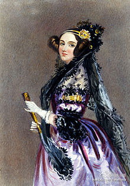

每年都有纪念活动，看到就转。 //@hadoop向磊:每个程序员的电脑里都应该装一个ada语言//@刘江总编: 码农都搞一个Ada像供着，每天拜一下默念没bug，效果应该不错。@网路冷眼:【200 years ago today Ada Lovelace was born】网页链接 今天是埃达·洛夫莱斯(Ada Lovelace，1815年12月10日－1852年11月27日)诞生200周年。她是是著名英国诗人拜伦之女，数学爱好者，被后人公认为第一位计算机程序员。 